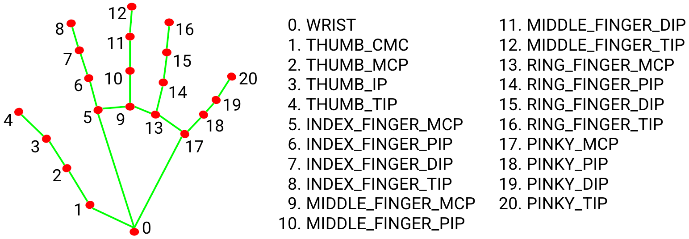
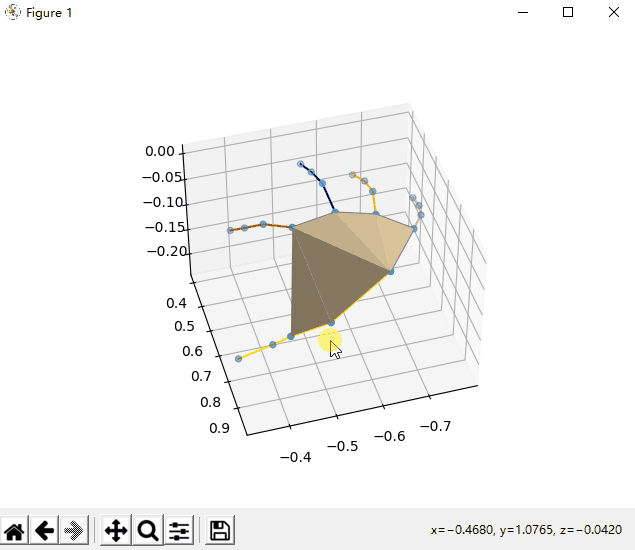
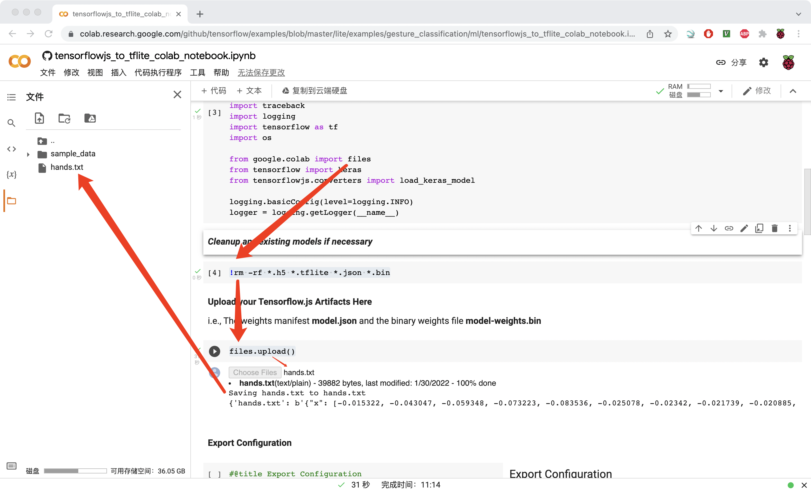

MediaPipe Hands
可视化MediaPipe Hands导出数据
参考文档
Hand Landmark Model

MediaPipe Output
MULTI_HAND_LANDMARKS
Collection of detected/tracked hands, where each hand is represented as a list of 21 hand landmarks and each landmark is composed of x, y and z. x and y are normalized to [0.0, 1.0] by the image width and height respectively. z represents the landmark depth with the depth at the wrist being the origin, and the smaller the value the closer the landmark is to the camera. The magnitude of z uses roughly the same scale as x.
以屏幕坐标系为基准的数据，z轴越靠近屏幕越小，手掌面面向摄像头为负轴
MULTI_HAND_WORLD_LANDMARKS
Collection of detected/tracked hands, where each hand is represented as a list of 21 hand landmarks in world coordinates. Each landmark is composed of x, y and z: real-world 3D coordinates in meters with the origin at the hand’s approximate geometric center.
以手的几何中心的坐标系数据
MULTI_HANDEDNESS
Collection of handedness of the detected/tracked hands (i.e. is it a left or right hand). Each hand is composed of label and score. label is a string of value either “Left” or “Right”. score is the estimated probability of the predicted handedness and is always greater than or equal to 0.5 (and the opposite handedness has an estimated probability of 1 - score).
Note that handedness is determined assuming the input image is mirrored, i.e., taken with a front-facing/selfie camera with images flipped horizontally. If it is not the case, please swap the handedness output in the application.
判断左右手
Android diff
multiHandLandmarks
diff --git a/mediapipe/examples/android/solutions/hands/src/main/java/com/google/mediapipe/examples/hands/MainActivity.java b/mediapipe/examples/android/solutions/hands/src/main/java/com/google/mediapipe/examples/hands/MainActivity.java
index d93f9b1..a526fc4 100644
--- a/mediapipe/examples/android/solutions/hands/src/main/java/com/google/mediapipe/examples/hands/MainActivity.java
+++ b/mediapipe/examples/android/solutions/hands/src/main/java/com/google/mediapipe/examples/hands/MainActivity.java
@@ -369,5 +369,16 @@ public class MainActivity extends AppCompatActivity {
"MediaPipe Hand wrist world coordinates (in meters with the origin at the hand's"
+ " approximate geometric center): x=%f m, y=%f m, z=%f m",
wristWorldLandmark.getX(), wristWorldLandmark.getY(), wristWorldLandmark.getZ()));
+
+ Log.e( TAG, "----------------------");
+ Log.e( TAG, result.multiHandedness().get(0).getLabel());
+ Log.e( TAG, "" + result.multiHandedness().get(0).getScore());
+
+
+ Log.i("MonitorLandMark", "start capture data");
+ for (NormalizedLandmark landmark : result.multiHandLandmarks().get(0).getLandmarkList()) {
+ Log.i("MonitorLandMark", String.format("x=%f, y=%f, z=%f", landmark.getX(), landmark.getY(), landmark.getZ()));
+ }
+ Log.i("MonitorLandMark", "end capture data");
}
}
multiHandWorldLandmarks
diff --git a/mediapipe/examples/android/solutions/hands/src/main/java/com/google/mediapipe/examples/hands/MainActivity.java b/mediapipe/examples/android/solutions/hands/src/main/java/com/google/mediapipe/examples/hands/MainActivity.java
index d93f9b1..13227ee 100644
--- a/mediapipe/examples/android/solutions/hands/src/main/java/com/google/mediapipe/examples/hands/MainActivity.java
+++ b/mediapipe/examples/android/solutions/hands/src/main/java/com/google/mediapipe/examples/hands/MainActivity.java
@@ -369,5 +369,19 @@ public class MainActivity extends AppCompatActivity {
"MediaPipe Hand wrist world coordinates (in meters with the origin at the hand's"
+ " approximate geometric center): x=%f m, y=%f m, z=%f m",
wristWorldLandmark.getX(), wristWorldLandmark.getY(), wristWorldLandmark.getZ()));
+
+ Log.e( TAG, "----------------------");
+ Log.e( TAG, result.multiHandedness().get(0).getLabel());
+ Log.e( TAG, "" + result.multiHandedness().get(0).getScore());
+
+
+ Log.i("MonitorLandMark", "start capture data");
+ // for (NormalizedLandmark landmark : result.multiHandLandmarks().get(0).getLandmarkList()) {
+ // Log.i("MonitorLandMark", String.format("x=%f, y=%f, z=%f", landmark.getX(), landmark.getY(), landmark.getZ()));
+ // }
+ for (Landmark landmark : result.multiHandWorldLandmarks().get(0).getLandmarkList()) {
+ Log.i("MonitorLandMark", String.format("x=%f, y=%f, z=%f", landmark.getX(), landmark.getY(), landmark.getZ()));
+ }
+ Log.i("MonitorLandMark", "end capture data");
}
}
可视化示例代码
-
python3 LogTools.py MediaPipeHands -mode live
keyboard “c” is for data capture start
keyboard “p” is for data capture stop
defalut data at output/hands.txt
绘图帧率比较低，可以调高，这样就不会出现延迟很久绘图的现象
self.ani = animation.FuncAnimation(self.fig, self.change_plot, interval=1000 / 10)
interval= 1000 / 10->interval= 1000 / 25

Screen Sync
https://www.vysor.io/
本来担心开了投屏，数据通信会变慢，导致实时性不好，结果一点问题都没有，实时性很好
用于录屏
jupyter
pip3 install jupyter
pip3 install ipyparallel
jupyter notebook
以当前目录为执行目录
ipynb文件是json文件，将所谓的cell内容以json的形式保存
-
发现vscode本身就支持jupyter notebook直接调试
主要用于理解Google Colab工作原理、环境
hand gesture recognition
Google Colab上传、下载训练文件
删除之前的文件
!rm -rf *.h5 *.tflite *.json *.bin
上传文件，会自动上传到Google Colab虚拟机的工作目录，下载即从工作目录下载指定文件到本地

from google.colab import files
files.upload()
# TODO
files.download(model_tflite)
Training Model
hand-gesture-recognition-using-mediapipe
https://github.com/kinivi/hand-gesture-recognition-mediapipe/blob/main/keypoint_classification_EN.ipynb
keypoint_classification_EN.ipynb
https://colab.research.google.com/
上传
上传完就回进入Google提供的模型训练虚拟环境，在里面执行、修改程序
Training data
[修改] -> [清除所有输出项]